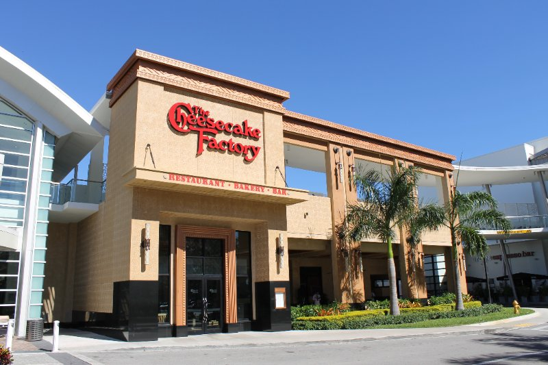

![NTK]()

A Joke About Gold Became a Referendum on Who Eats Where
Former President Barack Obama told an Ohio rally that President Donald Trump had the White House looking "like Saddam Hussein opened a Cheesecake Factory," a line aimed at the gilding, the ballroom and the paved-over Rose Garden. Republicans heard something else. Fox News host Martha MacCallum called it a "guns-and-religion" moment, and the White House cast it as contempt for working families (The Atlantic). Treasury Secretary Scott Bessent, who has a habit of turning a news cycle into a photo op, ate a $22.95 French dip cheeseburger two blocks from his office and told reporters to send "the Martha's Vineyard set" there (The New Republic). Rep. Randy Fine posted his own lunch photo the same day (The Independent).
The restaurant chain's actual customers were not the audience. Home values near its locations run about 27% higher than in comparable areas, partly because many sit in upscale malls (Fox News). The defense of the "common man's" restaurant came from a Treasury secretary worth roughly $600 million.
Then the President Told Texas the Hamburger Was Too Expensive
The message needed discipline from the top, and the top supplied the opposite. At a Texas rally on Tuesday, Trump pitched his $5,000 "Trump dividend" for voters if Republicans hold Congress, then warned that it would buy "a hamburger and maybe a small dessert" at Mar-a-Lago. "That's not a good place if you're price conscious," he said (The Daily Beast). Mar-a-Lago reportedly charges a $1 million membership fee (The Independent).
Trump never played the populist part comfortably, as The Atlantic noted. Asked about Obama's joke, he skipped the elitism charge and gave a monologue on the artisans who "reskinned" the building (The Atlantic).
Clay Travis Brought a Childhood Memory That Did Not Exist Yet
The weakest link was the Fox personality who volunteered his own biography. Clay Travis, 47, said he grew up treating the chain as a splurge his family often could not afford. The Bulwark's Tim Miller then pointed out that Travis was born in 1979 and that the first Nashville location opened in 2005, after he had graduated from George Washington University (Mediaite). Travis answered on X that he meant the D.C. location at 18 and that he "didn't know the exact year it opened," which moved the memory from childhood to a college freshman year at an expensive private school (The Daily Beast).
Meanwhile, the Restaurant Kept Its Mouth Shut and Its Margins
The company with the most at stake said nothing. CEO David Overton talked up "the enduring relevance of the brand" on the earnings call and skipped Obama entirely (USA Today).
(The Wall Street Journal). The stock has more than doubled since January (The Washington Post). Rick McCormack, who designed the chain's look, said he was not bothered and wondered whether "we have bigger issues in the country" (The New York Times). He also said the two styles "couldn't be farther apart" (USA Today).
The restaurant booked a record quarter, Bessent got his lunch, and the president talked Texas out of the one place his allies were defending.
The jokes were about décor. The next two weeks are about who has to keep standing behind them.
Republican Campaigns Will Drop the Cheesecake Line Within Days, and the White House Will Not Say Why
The talking point has already cost more than it earned. Trump's Mar-a-Lago remark handed Democrats a clip that answers the elitism charge with the president's own voice, and the people who spent a weekend defending the chain have no reply that does not involve explaining Trump. The most likely outcome is quiet abandonment. Bessent's lunch photo, Fine's post and the Fox segments will stop appearing in new content, and nobody will announce the retirement. Democratic campaigns and super PACs will do the opposite. Expect the Texas clip cut into digital ads by the weekend, paired with the $22.95 cheeseburger, because it fuses two voter complaints, prices and a rich man's priorities, into one 15-second spot. Republicans in tight House races lose the most here. They spent a news cycle defending a restaurant instead of explaining gas prices, and the Mar-a-Lago line will follow them into every local interview.
Clay Travis Will Not Retract, and That Is the Part Worth Tracking
Travis already chose his path. Instead of conceding the date, he moved the memory to college and called his critics out of touch. The most likely next step is a repeat: more posts, more airtime, a pivot to the argument that the chain is expensive for most people, which has some support in the Fox neighborhood data. He will not apologize, because his audience rewards the posture rather than the accuracy. The cost lands elsewhere. Every Republican who cited a Cheesecake Factory "childhood" now has to decide whether to vouch for a story with a documented hole in it, and most will simply stop citing him on this topic. The Bulwark gets a second lease on a segment that is cheap to produce, so expect Miller and Pablo Torre to keep pulling on it through Election Day.
The Chain Will Keep Its Silence, and the Next Earnings Call Will Tell Whether It Was Free
Overton's refusal to engage was correct strategy, and the likeliest result is that it holds through the midterms. No executive will mention Obama or Trump publicly. The risk sits further out, in the fourth-quarter numbers. A stock that has more than doubled since January is priced for continued traffic growth, and diners in both parties now have a political reason to notice the brand. Whether that helps or hurts will show up in foot traffic data from analysts like Jim Salera at Stephens within weeks, and in the next quarterly report after that. A company that spent decades being nobody's enemy just became everybody's prop, and its only protection is that voters forget faster than restaurants renovate.
A door opened this week that neither party meant to build: a shared vocabulary for taste and money, and a restaurant that can be pointed to by both sides.
Democrats Can Now Run on Prices Without Sounding Like They Are Scolding Anyone
For years the Democratic problem on affordability was tone. Telling voters the economy is hurting them reads as lecturing; telling them gold trim is a distraction reads as the same lecture in a nicer suit. This week handed them a way around that. Obama's joke drew a Republican counterattack, and Trump then answered the counterattack himself, with his own voice, in front of a Texas crowd. A Democratic campaign no longer has to argue that the president lives in a different economy from his voters. It can play the clip and stay quiet. That combination was not available last Friday: Obama's line had to land first, the elitism charge had to be loud enough to pull in Bessent and the Fox segments, and Trump had to improvise a joke about a $5,000 check buying one hamburger. Remove any piece and the ad does not exist. Republicans in close House races have the most to lose, because the "Trump dividend" is the centerpiece of their closing message and it now arrives with a punchline attached.
The Restaurant Becomes the Measuring Stick for Both Parties' Class Claims
This door depends on the first. Once a campaign ad can use a chain restaurant to carry the affordability argument, the chain stops being scenery and becomes a unit of measure. The Fox News neighborhood analysis, which put the Cheesecake Factory third among chains for nearby home values, was published to settle a debate about whether the chain is a working-class spot. Democratic strategists now hold a Republican-friendly outlet's own data, and they can ask a question that works in either direction: if a $23 cheeseburger is the populist meal, what does the Mar-a-Lago line say about the baseline? Local reporters in swing districts can run the same exercise with their own mall menus, which makes the comparison cheap to produce and hard to spin. Clay Travis helped build this room by insisting on the chain's price tag as proof of Obama's elitism. That argument now measures him as well, and it cannot be unsaid.
Both Parties Could Borrow the Same Plain Language, and Voters Would Notice Who Used It First
The generative door sits behind the second. A restaurant that both sides have called expensive, tacky, aspirational and ordinary has accidentally produced a shared reference point, which is rare in a campaign where almost no fact is held in common. Designer Rick McCormack said he was not hurt and wondered about "bigger issues," and the one-clause shrug is more useful than most of what the campaigns said. A candidate in either party who names the real argument, that prices and priorities are the issue and décor is the joke, gets credit for stepping out of the fight. The first one to do it on local television, without a consultant's script, will look like the only adult at a very expensive table.
Two claims did the heaviest work this week. One was a biography, the other a definition of who counts as ordinary.
"Obama Mocked the Cheesecake Factory, and Through It, the Working Class"
The claim is simple: a former president insulted the diners. Fox News host Martha MacCallum called it a "guns-and-religion" moment, Rep. Lance Gooden wrote that Obama was disparaging "a nice dinner for hardworking Americans," and CNN commentator Scott Jennings said Obama is "undefeated at condescending to regular folks" (The Independent). People believe it because the fear underneath is real. Plenty of voters have been talked down to by someone with a better education and a bigger salary, and they remember it.
The joke, though, was about Trump and Saddam Hussein. The restaurant was the prop. The Atlantic pointed out that even without the Saddam reference, saying a chain's décor is wrong for the Oval Office is not a swipe at the chain (The Atlantic). Mediaite noted the right's framing "effectively ignored" the comparison to the Iraqi dictator (Mediaite). Remove the dictator from the sentence and the outrage has something to hold. Leave him in and it does not.
The people who gain are not the diners. A party running on a war it chose and prices that rose needs a different topic, and The Atlantic said so plainly: the pseudo-scandal lets Republicans move off the gilding and onto Democratic snobbery. The beneficiaries are the campaigns, the cable hosts who fill airtime with it, and the pundits whose follower counts grew with every post. The diner at the Grand Rapids mall gets a speaker who claims to stand beside him and a lunch photo from a man worth hundreds of millions.
The pattern is old. Obama's 2008 line about small-town voters clinging to guns and religion was recycled for years, and the "basket of deplorables" line in 2016 got the same treatment (The New Republic). The method is to find one sentence from a Democrat that can be read as contempt, then repeat it until the reading replaces the sentence. What makes it work is that the audience has often felt the real thing, so the borrowed grievance feels like their own.
The tell this week was the one place the script broke. Asked about Obama, Trump skipped the working-class defense and described the artisans who "reskinned" the building. Of all the people who might have spent the week defending the chain's reputation, the president alone had no use for it.
That leaves the second claim, which was small enough to check. A Fox host said he grew up eating there when his family could scrape it together, and the restaurant had not yet reached his hometown. When the date came out, he said the memory was from college. The grievance stayed. Only the childhood was swapped out. The claim never needed to be true. It needed to sound like something a regular person would say, and for most of the week that was enough.